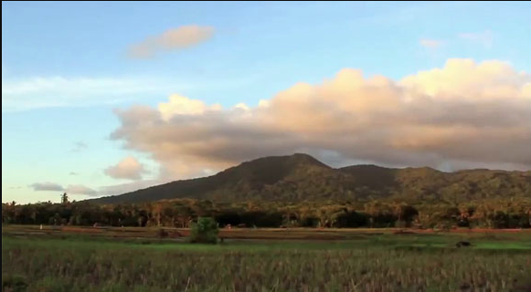
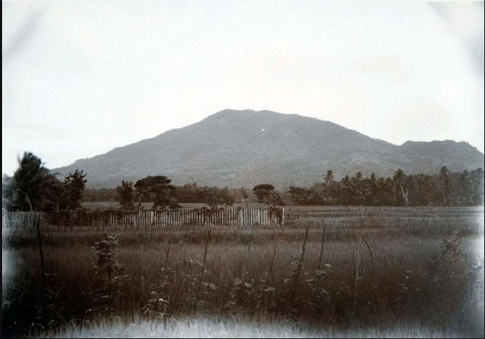
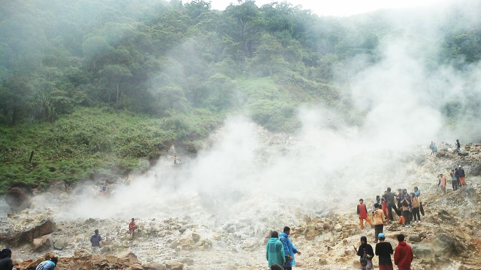
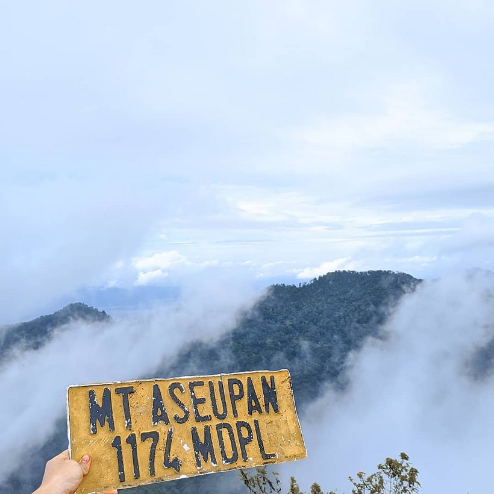

1. Gunung Honje

Gunung di Banten pertama yaitu Gunung Honje yang memiliki ketinggian sekitar 620 meter di atas permukaan laut (mdpl). Untuk mendaki gunung ini pendaki tidak perlu tenaga ekstra. Selain itu, gunung ini juga merupakan pintu masuk Taman Nasional Ujung Kulon loh dan menjadi rumah bagi banyaknya flora serta fauna langka. Misalnya saja, owa jawa juga badak bercula satu. Di gunung ini, ada tempat lain yang bisa kamu kunjungi, antara lain: Goa Lalai dan Curug Lauk. Pengunjung dan pendaki bisa menikmati suasana segar di kala berkunjung ke gunung ini, terlebih di saat pagi dan sore hari. Lokasi : Taman Nasional Ujung Kulon, Kabupaten Pandeglang, Banten.
2. Gunung Karang

Gunung Karang menjadi salah satu gunung teraktif di Banten dan lokasinya berada persisi di tengah kota Pandeglang. Gunung ini memiliki ketinggian sekitar 1.778 mdpl. Dan puncak gunung ini bernama Sumur Tujuh yang memiliki dua jalur pendakian, yaitu melewati Desa Kaduengang atau melewati Pagerwatu (Ciekek). Jalur Kaduengang ini yang paling sering dilewati para pendaki. Dan untuk bisa mencapai puncak gunung, pendaki akan membutuhkan waktu sekitar 4-6 melalui jalur tersebut. Dan saat akan Pagerwatu, pendaki membutuhkan waktu sekitar 7-8 jam. Saat sempat melewati Kaduengang, maka ada baiknya berziarah dahulu ke makam Pangeran TB. Hal ini bertujuan untuk menjaga kelancaran saat mendaki dan sebagai syarat spiritual agar pendakian lebih mudah. Lokasi : Kabupaten Pandeglang, Banten.
3. Gunung Pulosari

Gunung Pulosari, yang memiliki ketinggian sekitar 1.364 mdpl. Gunung ini berada di Kabupaten Pandeglang. Gunung Pulosari menjadi salah salah satu gunung yang paling disukai banyak pendaki. Untuk menuju puncak gunung ini, pendaki harus melewati dua jalur yang cukup landai juga menantang. Gunung ini sama seperti Gunung Karang dan masih aktif. Meski demikian, selama ini gunung tersebut belum menunjukkan adanya letusan yang pernah terjadi. Hal yang menarik dari gunung ini yaitu pemandangan kawah yang luas dan dikelilingi tanah lapang terhampar luas. Selain menawarkan pemandangan yang memukau dan indah, para pendaki lebih mudah mendirikan tenda di tanah lapang tersebut. Lokasi : Kabupaten Pandeglang, Banten.
4. Gunung Aseupan

Gunung Aseupan adalah gunung yang terletak di Kecamatan Pulosari, Kabupaten Pandeglang, Provinsi Banten, sekitar 18 km sebelah barat dari pusat kota Pandeglang. Puncak Gunung Aseupan berada pada ketinggian 1.174 mdpl. Jika ingin mendaki, kalian perlu mempersiapkan fisik karena medannya yang sangat sulit, dan juga banyak semak belukar yang harus dilewati. Butuh sekitar 2 hari 1 malam untuk menuju ke Puncak Gunung Aseupan. Untuk kemping, ada baiknya mencari tanah yang landai. Selain itu, persiapan air juga harus diperhitungkan matang-matang. Sebabnya, tidak ada mata air di sepanjang jalur pendakian.
Sumber Konten : https://banten.idntimes.com/travel/destination/idn-times-hyperlocal/7-rekomendasi-gunung-di-banten-ada-negeri-di-atas-awan?page=all